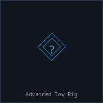
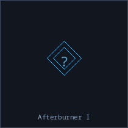
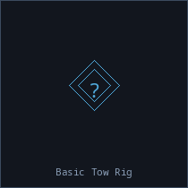
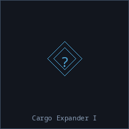
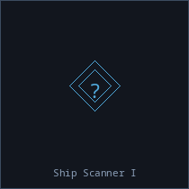
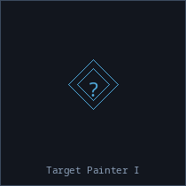
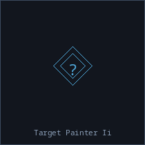
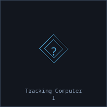
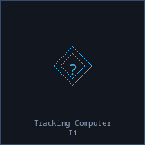

| Build Advanced Tow Rig |
 Advanced Tow Rig |
Circuit Board ×3, Power Cell ×1, Salvage Components ×2, Titanium Alloy ×3 |
18 ticks |
Basic Crafting 4, Salvaging 2 |
| Build Afterburner I |
 Afterburner I |
Engine Core ×1, Flex Polymer ×2, Titanium Alloy ×2 |
10 ticks |
Basic Crafting 2 |
| Build Armor Command Link H |
 Armor Command Link Armor Command Link |
Circuit Board ×4, Durasteel Plate ×3, Hull Plating ×2, Processing Core ×1 |
25 ticks |
Advanced Crafting 3, Engineering 4 |
| Build Auto-Targeting System H |
 Auto-Targeting System Auto-Targeting System |
Circuit Board ×2, Processing Core ×1, Sensor Array ×1 |
14 ticks |
Basic Crafting 3, Weapon Crafting 2 |
| Build Basic Tow Rig |
 Basic Tow Rig |
Circuit Board ×1, Flex Polymer ×3, Steel Plate ×5 |
8 ticks |
Basic Crafting 2 |
| Build Cargo Expander I |
 Cargo Expander I |
Flex Polymer ×3, Steel Plate ×4 |
6 ticks |
Basic Crafting 1 |
| Build Crimson Berserker Core |
 Crimson Berserker Core Crimson Berserker Core |
Neural Extract ×1, Power Cell ×2, Processing Core ×1, Refined Plasma Core ×2 |
30 ticks |
Advanced Crafting 5, Weapon Crafting 4 |
| Build Navigation Command Link H |
 Navigation Command Link Navigation Command Link |
Circuit Board ×4, Engine Core ×2, Graphene Sheet ×2, Processing Core ×1 |
25 ticks |
Advanced Crafting 3, Navigation 4 |
| Build Outer Rim Salvage Array |
 Outer Rim Salvage Array Outer Rim Salvage Array |
Circuit Board ×4, Nanoplastic Composite ×3, Repair Nanite Container ×1, Sensor Array ×2 |
25 ticks |
Advanced Crafting 4, Salvaging 4 |
| Build Probe Launcher I |
 Probe Launcher I Probe Launcher I |
Circuit Board ×3, Sensor Array ×1, Titanium Alloy ×2 |
14 ticks |
Basic Crafting 3, Scanning 2 |
| Build Probe Launcher II |
 Probe Launcher II Probe Launcher II |
Circuit Board ×3, Probe Launcher I ×1, Tracking System ×1 |
20 ticks |
Advanced Crafting 3, Scanning 4 |
| Build Sensor Dampener H |
 Sensor Dampener Sensor Dampener |
Circuit Board ×3, Flex Polymer ×2, Sensor Array ×1 |
14 ticks |
Basic Crafting 3, Electronic Warfare 2 |
| Build Shield Command Link H |
 Shield Command Link Shield Command Link |
Circuit Board ×4, Processing Core ×1, Shield Emitter ×2, Superconductor ×2 |
25 ticks |
Advanced Crafting 3, Shield Crafting 4 |
| Build Ship Scanner I |
 Ship Scanner I |
Circuit Board ×2, Focused Crystal ×1, Sensor Array ×1 |
12 ticks |
Basic Crafting 3, Scanning 1 |
| Build Solarian Solar Collector |
 Solarian Solar Collector Solarian Solar Collector |
Circuit Board ×4, Crystalline Lattice ×2, Power Cell ×2, Superconductor ×3 |
25 ticks |
Advanced Crafting 4 |
| Build Stasis Webifier I H |
 Stasis Webifier I Stasis Webifier I |
Circuit Board ×3, Sensor Array ×1, Superconductor ×2 |
16 ticks |
Basic Crafting 4, Electronic Warfare 2 |
| Build Stasis Webifier II H |
 Stasis Webifier II Stasis Webifier II |
Circuit Board ×4, Power Cell ×1, Sensor Array ×2, Superconductor ×3 |
24 ticks |
Advanced Crafting 3, Electronic Warfare 4 |
| Build Target Painter I |
 Target Painter I |
Circuit Board ×3, Focused Crystal ×1, Sensor Array ×1 |
14 ticks |
Basic Crafting 3, Electronic Warfare 2 |
| Build Target Painter II |
 Target Painter II |
Circuit Board ×4, Focused Crystal ×2, Optical Fiber Bundle ×2, Sensor Array ×2 |
22 ticks |
Advanced Crafting 2, Electronic Warfare 4 |
| Build Tracking Computer I |
 Tracking Computer I |
Circuit Board ×2, Processing Core ×1, Tracking System ×1 |
14 ticks |
Basic Crafting 3, Weapon Crafting 2 |
| Build Tracking Computer II |
 Tracking Computer II |
Circuit Board ×4, Optical Fiber Bundle ×1, Processing Core ×1, Tracking System ×2 |
22 ticks |
Advanced Crafting 2, Weapon Crafting 4 |
| Build Warp Disruptor H |
 Warp Disruptor Warp Disruptor |
Circuit Board ×3, Power Cell ×1, Sensor Array ×1, Superconductor ×2 |
22 ticks |
Advanced Crafting 2, Electronic Warfare 3 |
| Build Warp Scrambler H |
 Warp Scrambler Warp Scrambler |
Circuit Board ×4, Power Cell ×1, Sensor Array ×2, Superconductor ×3 |
25 ticks |
Advanced Crafting 3, Electronic Warfare 4 |